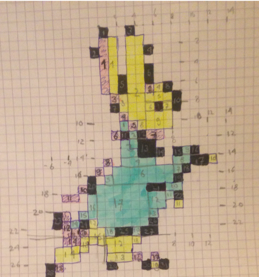
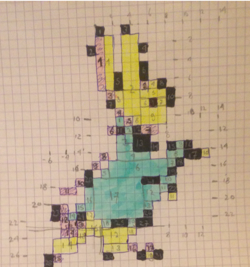

Het doel van dit project was ten eerste om een kleine, draagbare arcadekast te maken die je op een monitor kunt aansluiten om zo spellen te kunnen spelen. Het tweede doel was om een game te progammeren die we op die arcade zouden kunnen spelen. Ik deed dat met Femke Wenneker. De arcade maakten we door een Raspberry Pi aan te sluiten op een picadehat en die vervolgens op de knoppen en joystick die we hadden gekregen, en dat geheel vervolgens met een doos om te toveren tot een daadwerkelijke arcadekast. De game hebben we geprogammeerd in Javascript p5, een taal waarmee Femke en ik ook in de vierde samen een game hebben gemaakt. Toen maakten we nog een endless runner, dit keer gingen we voor een platformspel. Het was ingewikkelder dan de endless runner, maar prima te doen: de afgelopen jaren hebben duidelijk hun vruchten afgeworpen.
De eerste weken was echt even opstarten: we moesten onze Javascriptkennis opfrissen en een plan maken voor ons spel. De eerste week stelden we daarnaast onze raspberry pi in. We besloten uiteindelijk om een platformspel te maken, met als hoofdpersonage Pieter Konijn, uit de verhalen van Beatrix Potter. Onze samenwerking ging best soepel. We hebben in de vierde een soortgelijk project gedaan, dus met onze ervaring van dat project verdeelden we de taken: Femke progammeerde de technischere onderdelen van het spel; onder andere collision detection, het laten bewegen van Pieter Konijn en het integreren van speciale functies, zoals muntjes. Ik was verantwoordelijk voor de vormgeving, oftewel het design van de game: Ik heb alle pixel art gemaakt (behalve de achtergrond), de menu's met de uitleg en verhaalllijn tussendoor en ik heb onze arcadekast in elkaar gezet versierd. Het hele project door bleven we goed overleggen over de stand van zaken en om onze verschillende stukken code samen te voegen. Uiteindelijk heeft femke een deel van de design op zich genomen, namelijk het ontwerpen van de levels, omdat bleek dat de functies van de game daar nauw mee waren verbonden en het daarom logischer was als zij dat deed. Het ontwerpen van de levels deed Femke met behulp van een online tool die eigenlijk bedoeld is voor het ontwerpen van breipatronen, maar die erg geschikt bleek om levels mee te ontwerpen: (links is het ontwerp, rechts het eindresultaat)
 

Het ontwerpen en programmeren van de karatkers ging best soepel. Ik heb pixelart gebruikt hiervoor, dus heb geschetst op ruitjes papier. Door hierbij de x- en y-as te plaatsen was dit makkelijk om te zetten in code. Het hielp ook dat ik dit al eerder had gedaan, tijdens het project waarbij Femke en ik onze eerste game ontworpen hebben. Door de ervaring ging het deze keer een stuk makkelijker, en zijn de karakters ook iets aangenamer om naar te kijken. Het bouwen van de arcade kast was nog wel wat ingewikkelder, aangezien ik dit voor het eerst deed. Het was nog een heel gedoe om van al die knopppen en kabels een mooie arcade kast te bouwen. Maar persoonlijk vind ik het resultaat zo slech nog niet.
Ik ben erg tevreden met het eindresultaat! We hebben zowel een arcadekast kunnen maken, als een game die voor zover ik weet zo goed als helemaal werkt. De game heeft vijf levels, waarbij na elke twee levels iets nieuws wordt geïntroduceerd. Het leuke aan deze game is verder dat je eigenlijk eindeloos dingen kunt toevoegen. Een aantal van onze ideeën zijn bijvoorbeeld snoepjes oppakken die je extra levens geven en de bewegende platformen een dodelijke functie geven: als je ertussen komt verlies je een leven/ga je dood. Zo kun je eindeloos doorgaan. Zie voor de code van onze game de repository Peter Rabbit and the Lost Coins De game kun je hier spelen. Let wel op: de controls worden uitgelegd zoals die op de arcade zijn. Op de computer moet je de pijltjestoetsen gebruiken ipv de joystick, de enter toets ipv de roze knop en 'A' ipv de zwarte knop. Onze arcadekast ziet er (dankzij mij) erg leuk uit:


We moeten de game nog op de arcadekast zetten, dat gaan we als het goed is komende week doen.